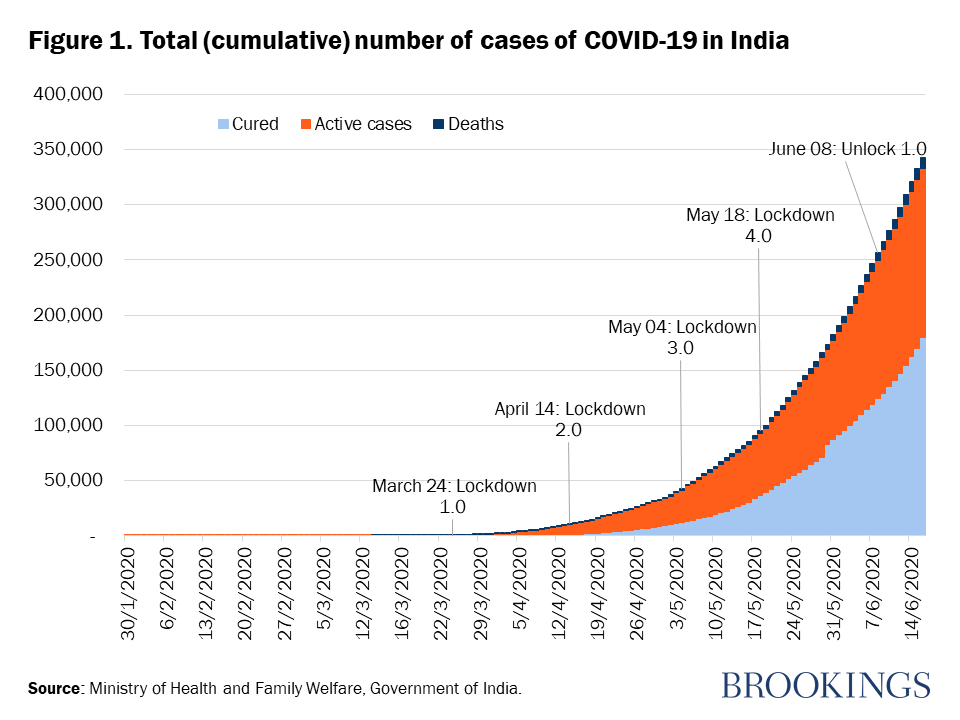

Coronaviruse is a group of related RNA viruses that cause diseases in mammals and birds. In humans and birds, they cause respiratory tract infections that can range from mild to lethal. Mild illnesses in humans include some cases of the common cold (which is also caused by other viruses, predominantly rhinoviruses), while more lethal varieties can cause SARS, MERS and COVID-19, which is causing an ongoing pandemic. In cows and pigs they cause diarrhea, while in mice they cause hepatitis and encephalomyelitis.
Coronaviruses constitute the subfamily Orthocoronavirinae, in the family Coronaviridae, order Nidovirales and realm Riboviria.They are enveloped viruses with a positive-sense single-stranded RNA genome and a nucleocapsid of helical symmetry.The genome size of coronaviruses ranges from approximately 26 to 32 kilobases, one of the largest among RNA viruses.They have characteristic club-shaped spikes that project from their surface, which in electron micrographs create an image reminiscent of the solar corona, from which their name derives.
History OF CORONA
The earliest reports of a coronavirus infection in animals occurred in the late 1920s, when an acute respiratory infection of domesticated chickens emerged in North America. Arthur Schalk and M.C. Hawn in 1931 made the first detailed report which described a new respiratory infection of chickens in North Dakota. The infection of new-born chicks was characterized by gasping and listlessness with high mortality rates of 40–90%. Leland David Bushnell and Carl Alfred Brandly isolated the virus that caused the infection in 1933. The virus was then known as infectious bronchitis virus (IBV). Charles D. Hudson and Fred Robert Beaudette cultivated the virus for the first time in 1937.
The specimen came to be known as the Beaudette strain. In the late 1940s, two more animal coronaviruses, JHM that causes brain disease (murine encephalitis) and mouse hepatitis virus (MHV) that causes hepatitis in mice were discovered. It was not realized at the time that these three different viruses were related.
Human coronaviruses were discovered in the 1960s using two different methods in the United Kingdom and the United States. E.C. Kendall, Malcolm Bynoe, and David Tyrrell working at the Common Cold Unit of the British Medical Research Council collected a unique common cold virus designated B814 in 1961.The virus could not be cultivated using standard techniques which had successfully cultivated rhinoviruses, adenoviruses and other known common cold viruses.
In 1965, Tyrrell and Bynoe successfully cultivated the novel virus by serially passing it through organ culture of human embryonic trachea.The new cultivating method was introduced to the lab by Bertil Hoorn.The isolated virus when intranasally inoculated into volunteers caused a cold and was inactivated by ether which indicated it had a lipid envelope.Dorothy Hamre and John Procknow at the University of Chicago isolated a novel cold from medical students in 1962. They isolated and grew the virus in kidney tissue culture, designating it 229E.

Covid Cases (India)
DEVELOPED BY GUNAGYA AGARWAL